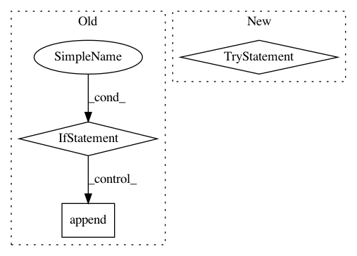

9982ea13b8562996047c96381e96fbc720973fee,docs/conf.py,,run_apidoc,#,285
Before Change
]
sphinx_apidoc_args = []
if StrictVersion(sphinx.__version__) < StrictVersion("1.7.0"):
sphinx_apidoc_args.append(sphinx.apidoc.__file__)
sphinx_apidoc_args.extend(
[
"-f",
"-T",
After Change
".."
] + ignore_paths
try:
// Sphinx-1.7+
from sphinx.ext import apidoc
apidoc.main(argv)
except ImportError:
from sphinx import apidoc
argv.insert(0, apidoc.__file__)
apidoc.main(argv)
def setup(app):
app.connect("builder-inited", run_apidoc)
In pattern: SUPERPATTERN
Frequency: 3
Non-data size: 3
Instances
Project Name: dask/dask-image
Commit Name: 9982ea13b8562996047c96381e96fbc720973fee
Time: 2018-06-18
Author: jakirkham@gmail.com
File Name: docs/conf.py
Class Name:
Method Name: run_apidoc
Project Name: ntucllab/libact
Commit Name: 325fae8fbbc16b3c1ca40559bb2a9c783efaf440
Time: 2015-11-25
Author: yangarbiter@gmail.com
File Name: libact/query_strategies/active_learning_by_learning.py
Class Name: ActiveLearningByLearning
Method Name: make_query
Project Name: dgasmith/opt_einsum
Commit Name: 589950b1125c4561b3ec7480cc1f71bfb85249a8
Time: 2018-08-20
Author: fritzo@uber.com
File Name: opt_einsum/backends/shared.py
Class Name:
Method Name: handle_sharing